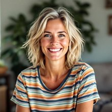

Was, wenn wir die Zukunft wieder ausprobieren?
Neulich habe ich mich dabei ertappt, wie ich auf eine Nachricht über künstliche Intelligenz mit einem ziemlich alten Reflex reagiert habe: „Was bedeutet das jetzt wieder für uns?“
Früher hätte ich wahrscheinlich sofort angefangen, Informationen zu sammeln. Neue Tools anschauen, Entwicklungen verfolgen, einordnen, was davon wichtig ist. Heute versuche ich manchmal etwas anderes. Ich lasse die Frage erst einmal liegen.
Denn vielleicht müssen wir gar nicht bei jeder neuen Entwicklung sofort wissen, was sie bedeutet. Vielleicht können wir auch neugierig sein. Ausprobieren. Beobachten, was sich verändert, wenn wir selbst einen Schritt in eine mögliche Zukunft hineinmachen.
Das gefällt mir gerade an dieser Zeit: Sie ist an vielen Stellen ziemlich unübersichtlich. Und gleichzeitig steckt darin eine Menge Spielraum.

Eine kleine Zukunftsnotiz aus meinem September.